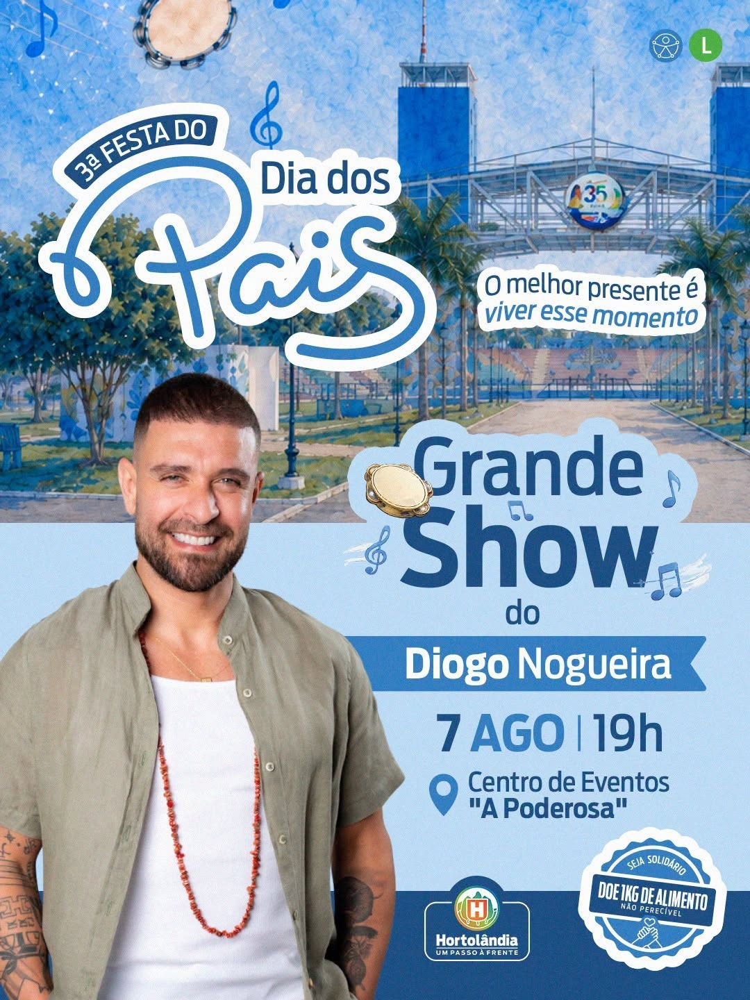

★ Maior entregaMeta Ads
Dia dos Pais · Show de Diogo Nogueira
526.628
Impressões
4,1×
Frequência
A peça que levou o convite do show ao maior número de moradores, com repetição suficiente para que a data fosse lembrada.